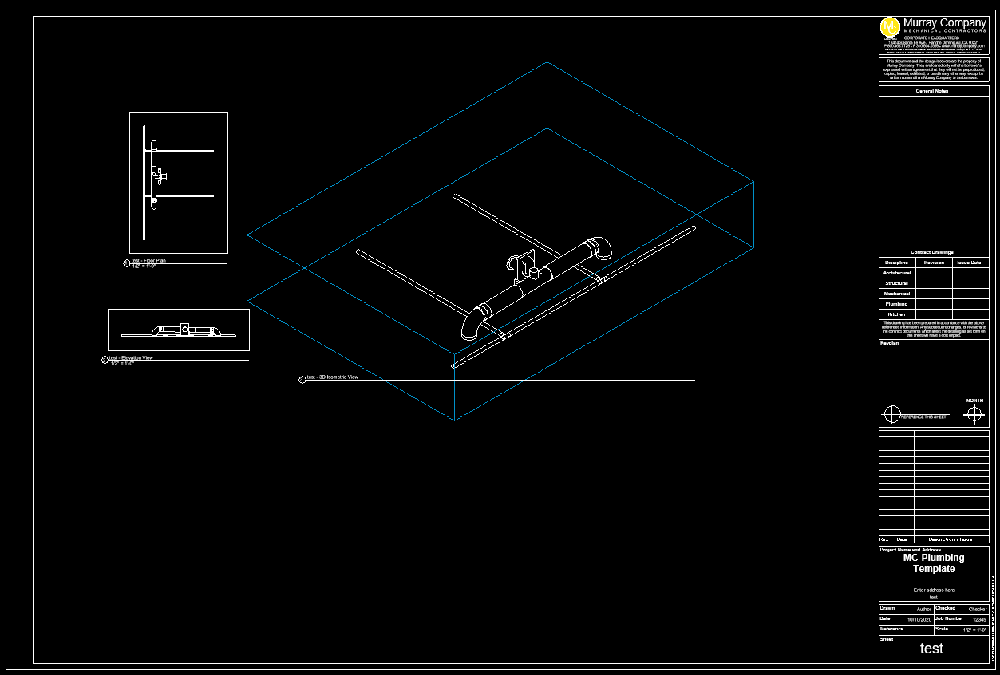
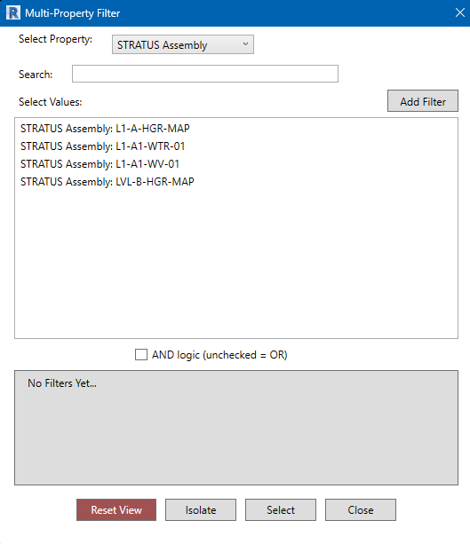
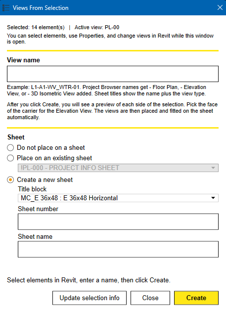
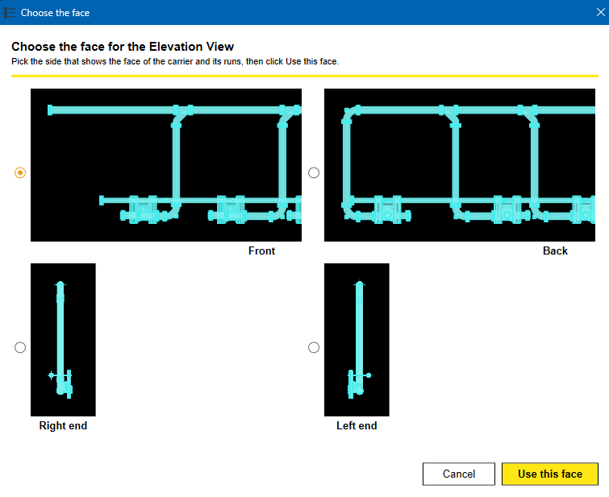

Why and when do we create carrier views?
Why - Builds a Floor Plan, an Elevation View, and a 3D Isometric View around a selected carrier and its runs, names them, and can place them on a sheet. This replaces creating each section and 3D view by hand.
When - As requested, when a carrier, rack, or trapeze needs views for coordination, a spool package, or a sheet.
DRAFT: this tool has not been tested on a live model. Try it in a test project first. Your PM or PE must check the views and sheet before anything is issued.
You get three views, named from the text you type:
- Your name - Floor Plan (1/2" = 1'-0")
- Your name - Elevation View (1/2" = 1'-0")
- Your name - 3D Isometric View (1-1/2" = 1'-0")

1. Select the elements:
This method requires the least setup. Work from a plan view, because the tool uses the bottom of the plan as "front."
Select the parts you want shown in the views.
-
Select fabrication parts and/or family instances (the carrier, the pipe runs on it, hangers, and so on).
- Other element types are ignored.
- Include at least one straight pipe run if you can. The views line up to the longest straight pipe in your selection.

2. Open the tool and name the views:
- Click the Create Carrier Views button on the Murray Ribbon.
- A small window opens. It stays open, so you can still change your selection, use Properties, and move around in Revit.
-
Type the view name. Example:
L1-A1-WV_WTR-01.- Do not type "Floor Plan" or "Elevation View." The tool adds the view type.
-
These characters are not allowed:
\ : { } [ ] | ; < > ?~` - If the name is already used, the tool adds (2), (3), and so on.
- Click Update selection info after you change your selection.

3. Choose a sheet option:
- Do not place on a sheet creates the three views only.
- Place on an existing sheet lets you pick a sheet from the list.
- Create a new sheet needs a title block, a sheet number, and a sheet name. The sheet number must not already exist.
Click Create. The window hides while Revit works. Do not click in Revit until the next window appears.
4. Choose the face for the Elevation View:
A Choose the face window shows four previews: Front, Back, Right end, and Left end.
- Select the side that shows the face of the carrier and its runs.
- Click Use this face.
- Click Cancel to stop. Nothing is created.
- The previews are temporary and are removed. They do not change your model.

5. Check the result:
- The window shows one line, for example: Created 3 views for L1-A1-WV_WTR-01. Elevation face: Front.
- If you chose a sheet, the views are placed automatically and the sheet opens. The Floor Plan is on top of the Elevation View on the left, and the 3D Isometric View is on the right.
- Click Close when you are done, or change the selection and run it again.
Missing image: images/img-05.png
ONE THING TO NOTE: EACH RUN CREATES A NEW SET OF THREE VIEWS.
DELETE OLD SETS YOU NO LONGER NEED, AND CHECK EVERY VIEW AND THE SHEET BEFORE IT GOES OUT.
What the tool does for you:
- Hides what you did not select. If your selection has a STRATUS Assembly value, other fabrication parts and model families outside that assembly are hidden in the new views. Your selected elements always stay.
- Hides clutter. Scope boxes, section lines, section heads, and Revit links are hidden in every new view.
- Aligns to the pipe. Views line up to the longest straight pipe in your selection, or in the same assembly if your selection has none.
- Sets the details. Fine detail level, view scale, and the Title on Sheet text are set for you.
If something goes wrong:
- "Select fabrication parts and/or family instances..." Nothing usable is selected. Select the elements, then click Create again.
- "Sheet number ... already exists." Enter a different sheet number, or use an existing sheet.
- "No STRATUS Assembly value was found." The views were created, but nothing was hidden by assembly. Check the STRATUS Assembly parameter on the selected elements.
- "No straight run was found." The views follow the plan orientation instead of a pipe. Add a straight pipe run to the selection to align to it.
- "Views are larger than the sheet area." Change the view scales or crop, then move the viewports on the sheet.
- The wrong side shows in the Elevation View. Run the tool again and pick a different face.
- The sheet or placement failed. The three views are still in the Project Browser. Drag them onto a sheet yourself.
[CONFIRM: Egnyte link for the training video or the template, if one exists]
<!-- OPEN ITEMS (remove before posting to the Help Hub)
- [CONFIRM: Revit and pyRevit versions. Script is marked DRAFT, untested.]
- [CONFIRM: exact Murray Ribbon tab and panel for the button.]
- [CONFIRM: default scales match Murray standards.]
- [CONFIRM: STRATUS Assembly parameter name matches the project parameter.]
-
Screenshots needed, saved in images/ with these names:
img-01.png finished Floor Plan, Elevation View, and 3D Isometric View (or a sheet with all three) img-02.png a carrier and runs selected in a plan view img-03.png the Create Carrier Views window with a name typed img-04.png the Choose the face window img-05.png the result line and the finished sheet
-->